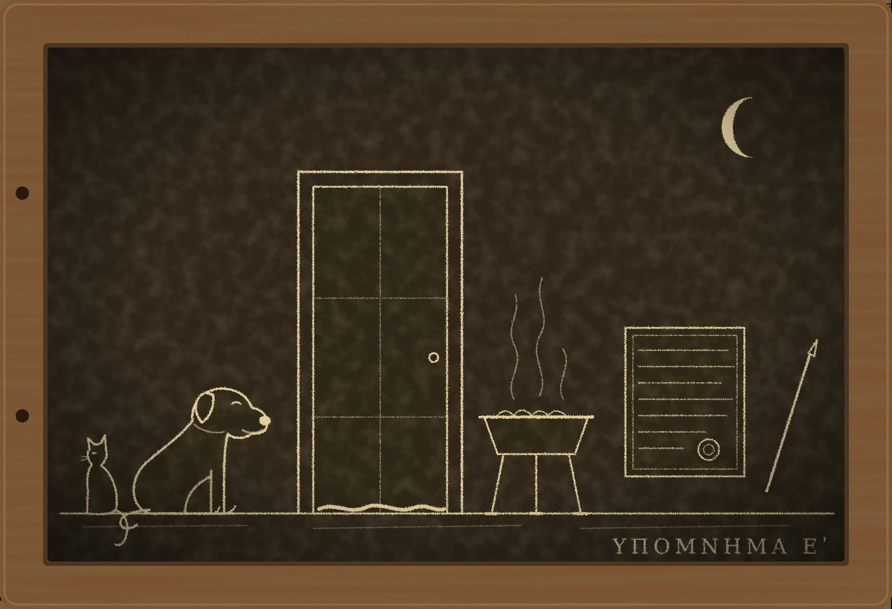

Гипомнема V Писец

I
Отказаться от клятвы в Риме может всякий, и закон не велит делать из отказа вывод. Вывод делает улица. Человек, который однажды сказал претору «отказ не запрещён», потом годами объясняет соседям, почему он это сказал, и я знаю это по себе, потому что двенадцать лет прожил именно так.
Есть, однако, в Риме люди, которые отказываются всегда. В Субуре их живёт несколько сот, в переулках между Аргилетом и Эсквилином, а за Тибром ещё больше. Нашими богами они не клянутся, потому что считают их пустым именем, а своим клянутся так редко, что никто из моих знакомых этого не видел. При Севере им позволили занимать городские должности, не оскорбляя их суеверия, и с тех пор претор с них клятвы не требует. Торгуют они между собой на слово, а с остальными через посредников, которые клянутся за них и берут за это двадцатую часть. Рим к ним привык, как привыкают к соседу, который не ходит в баню: неприятного в этом нет, но и доверять такому человеку трудно.
Ещё одно отличает их от нас. У нас слово хранят в памяти, и записанное считается подпоркой для слабой головы. У них главный человек после старейшины называется писцом, а в доме, где они собираются, стоит сундук со свитками, и перед этим сундуком они ведут себя так, как мы перед знамёнами.
Человек, который поднялся ко мне на шестой день после Сатурналий, отдыхал на каждой площадке, и я успел сосчитать их все. На деревянном пролёте он остановился дважды. Ферокс встретил его как родного, и гость, вместо того чтобы отступить, протянул ему ладонь и подождал, пока пёс её обнюхает.
Он назвался Досифеем, старейшиной собрания сибурезиев. Ему было далеко за семьдесят, борода у него была белая, а глаза весёлые, что в таком возрасте встречается реже, чем принято думать.
— Мне сказали, что ты составляешь формулы, — начал он, отдышавшись, — и что тебя самого не принимают там, где клянутся. Мне нужен именно такой человек. Те, кого принимают, не поймут вопроса.
Дело он изложил кратко. На Аргилете сорок лет держал книжную лавку Луций Невий Целер. Книги в Риме товар небогатый, но Невий торговал ещё воском, табличками и папирусом, и лавку его знала вся Субура. Я сам покупал у него таблички, о чём старейшине не сказал. За три дня до Сатурналий Невий умер. Сын похоронил его в родовой гробнице у Тибуртинской дороги, как положено, и поставил ему на девятый день поминальную трапезу.
А на другой день после похорон к сыну пришёл писец сибурезиев, по имени Юст, и принёс табличку. На ней было записано, что Луций Невий Целер, находясь в здравом уме, желает лежать не с отцами, а в подземелье у Номентанской дороги, где хоронят своих люди из собрания Субуры. Под записью в воске стоял оттиск кольца.
— Он ходил к нам одиннадцать лет, — сказал Досифей. — Каждый день Сатурна, после заката. Садился у двери и слушал, как читают. Нашим он не стал, для этого нужно больше, и он был стар для ножа. Но лежать хотел у нас. Юсту он сказал это за неделю до смерти, и Юст записал.
— Что ответил сын?
— Сын собирается в старшины квартала. У вас на каждом перекрёстке стоит алтарь духам, которые берегут улицу, и раз в год, зимой, старшина приносит им жертву за всех соседей. Человека, у которого отец лёг среди иудеев, к этому алтарю не подпустят. Он ответил так, как ответил бы я на его месте. Он пошёл к Дию Фидию и поклялся.
Формулу Досифей знал от слова до слова, её повторяла вся улица:
— «Мой отец никогда не говорил при мне, что хочет лежать у иудеев, и никогда при мне не называл их бога своим».
Формула была честная. Составил её человек осторожный, и я подумал, что сам он в ней не сомневается.
— А потом он потребовал, чтобы Юст поклялся в обратном, — продолжал старик. — Там же, у вашего Дия. Юст отказался. Теперь сын подал претору жалобу на оскорбление дома, а квартал говорит, что писец сочинил волю покойника, чтобы собрание получило его лавку. Лавки нам никто не завещал, но этого уже не слушают. Мне нужна клятва, которую признает ваш претор и которую мой писец сможет произнести. Есть такая?
— Не знаю, — сказал я. — Такого никто не спрашивал.
Пами, который всё это время лежал на балке, спустился и сел напротив гостя. К чужим он обычно не спускается.
— От него пахнет кожей и дымом, — сказал он. — И он не смотрит, куда поставить ногу. Он тут уже всё прочёл.
Досифей в самом деле разглядывал мою комнату так, как грамотный человек разглядывает страницу. Я держу в ней память: каждая вещь стоит на своём месте и хранит своё. До него этого не замечал никто.
II
Собрание сибурезиев занимает нижний этаж старого дома в переулке за Аргилетом. Снаружи это лавка без вывески. Внутри я увидел длинную комнату со скамьями вдоль стен, светильник на семь огней и сундук в нише, закрытый завесой. Ничего другого там нет, и человеку, привыкшему к нашим храмам, кажется, что хозяева ещё не въехали.
Юст жил в каморке за этой комнатой. Он оказался человеком лет сорока, сутулым, близоруким, с мозолью на среднем пальце правой руки. Когда он читал, губы его шевелились, а читал он всё, что попадалось на глаза, вплоть до клейма на моём светильнике.
Табличку он достал из-за пазухи. Воск был хороший, тот самый, каким торговал Невий, буквы мелкие и ровные, без единой подчистки. Я сам пишу двенадцать лет, тайком, и прячу написанное под половицей, потому что изгнанному стражу слов писать ещё стыднее, чем действующему. Глядя на эту руку, я впервые позавидовал чужому почерку.
— Он диктовал, или ты записал после?
— Он говорил, я писал. Потом я прочёл ему вслух, он сказал «так» и приложил кольцо.
— Кто был при этом?
— Никого. Его отпущенник ждал на улице, он всегда ждал на улице.
— Почему ты не хочешь поклясться?
Юст снял с губы приставшую нитку и ответил не сразу.
— Вашим Дием я клясться не могу. Для меня это имя, за которым ничего нет, и вышло бы, что я клянусь ничем, а это хуже лжи. Своим я бы поклялся, если велит старейшина. Но у нас это делают редко и не для того, чтобы выиграть тяжбу.
— А для чего?
— Чтобы прекратить вражду, — сказал за него Досифей.
Закон о клятве я знаю так, как солдат знает устав. Клятва имеет силу, если дана при жреце, в священном месте и при стражах слов. Чей это должен быть жрец и чьё место, в законе не сказано. Его составляли в те времена, когда никому не приходило в голову, что в Риме может найтись священное место, где нет ни одного изваяния.
— Жрец у вас есть?
— Жрецов у нас нет с тех пор, как нет Храма, — ответил Досифей. — Есть люди жреческого рода. У нас таких двое, один торгует стеклом.
— Этого достаточно. Сундук ваш стоит в священном месте?
— Он его и делает священным.
— Тогда вам нужны только два стража слов.
Никанор выслушал меня в тот же вечер и долго молчал. Никанор мой бывший ученик, ему тридцать два, он страж слов в Юлиевой базилике, и за этот год я принёс ему больше неприятностей, чем все его судьи.
— Коллегия не согласится, — сказал он.
— Коллегия согласится из любопытства. Она двести лет хранит клятвы и ни разу не видела, как клянутся эти люди. Скажи старикам, что закон молчит, а где закон молчит, решает тот, кто первым запомнил.
Коллегия спорила два дня и согласилась. Старшие рассудили, что если чужой бог не карает, то клятва писца ничего не стоит и вреда от неё не будет, а если карает, то это следует знать. Никанора и Диодора отпустили на тех же основаниях, что и летом в лагерь.
III
Накануне Досифей попросил меня пройтись с ним. Он ходит медленно, и от Субуры до Священной дороги мы шли столько, сколько я обычно иду до Тибра. У арки Тита он остановился.
Арку эту в Риме знают все, и никто на неё не смотрит. На внутренней стороне пролёта вырезано, как солдаты несут добычу из иерусалимского храма: стол, трубы и светильник на семь огней, такой же, как в комнате со скамьями.
— Мой прадед шёл вон там, — Досифей показал палкой куда-то за край рельефа. — Его на камне нет, пленных резчик не уместил. Ему было девять лет. В Риме его купил красильщик, а выкупили свои, через год.
— Ты под ней проходишь?
— Обхожу. Это недалеко.
Он рассказал мне о той войне, пока мы стояли, и рассказывал без злобы, как о болезни в семье. Начали её люди, которые хотели быть праведнее всех. Старейшины уговаривали их не прекращать жертву за императора и уговорить не сумели. Когда легионы подошли к городу, в городе воевали три своих войска, жгли друг у друга хлеб и стреляли друг в друга с храмовой стены.
— А один учитель велел ученикам положить себя в гроб и вынести за ворота как покойника, — сказал он. — Живых не выпускали ни свои, ни чужие. Его принесли к вашему полководцу, и тот позволил ему просить. Он мог просить город. Мог просить Храм. Он попросил маленький городок у моря и разрешение учить там детей.
— И получил?
— Получил. Города нет, Храма нет, а дети учатся до сих пор, и я один из них. У нас о нём говорят двояко. Одни говорят, что он спас всё, что можно было спасти. Другие, что в тот час его мудрость повернула вспять и что просить надо было всё.
— А ты как думаешь?
— Я думаю, что он боялся попросить много и не получить ничего. Я старейшина, страж. Я каждый день прошу мало.
На обратном пути я сказал ему, что у нас о будущем не клянутся: будущего никто не знает, и боги не принимают такой клятвы. Он усмехнулся.
— Наши учителя толкуют одно место в старой песне так, что нас трижды заклинали о будущем. Не подниматься стеной. Не восставать на народы. И третье, уже не нас: чтобы народы не слишком нас давили. Нас не спрашивали, клянутся о таком или нет. Те, кто поднялся стеной, остались вон на том камне. Мы живём в Субуре.
Юст поклялся на следующее утро. Человек жреческого рода, торговец стеклом, стоял у сундука и был смущён больше всех. Никанор и Диодор встали по сторонам, сложив руки. Завесу отдёрнули, и Юст положил ладонь на свиток.
— «Луций Невий Целер сказал мне своими устами, что хочет лежать среди людей нашего собрания. Я записал его слова в тот же час, и он приложил к воску своё кольцо. Клянусь в этом Именем, перед Законом».
Голос у него сел, как садится у всех. До луны оставалось восемнадцать ночей.
Рим услышал две клятвы и решил, что они противоречат одна другой. Они не противоречили: сын клялся о том, чего не слышал, писец о том, что слышал. Я понимал, что доживут оба, и понимал также, что через восемнадцать ночей улица останется при своём, потому что выжившие с обеих сторон никого ни в чём не убеждают.
Юст до луны не дожил.
IV
Его нашёл мальчик, который по утрам метёт комнату со скамьями. Дверь каморки была притворена, ставень закрыт. Юст лежал на постели одетый, лицом к стене, и лицо у него было розовое, как у спящего. У двери стояла бронзовая жаровня на трёх ножках, полная серой золы.
До луны оставалось девять ночей. К полудню в Субуре не было человека, который не знал бы, что писец иудеев солгал под клятвой и что их бог, оказывается, карает не хуже наших. Люди, вчера считавшие, что сундук со свитками ничего не значит, сегодня объясняли друг другу, что он значит очень много. К вечеру у стекольщика выбили ставни, а в переулке за Аргилетом жгли скамью, вынесенную из комнаты собрания.
Я пришёл туда с Фероксом раньше, чем унесли тело. Досифей сидел на пороге каморки и не давал её убирать.
— Юст мёрз, — сказал он. — Он всегда мёрз. Но жаровни у него не было, он грелся над горшком с углями и ставил его в ноги. Этой вещи я никогда не видел.
— Откуда она?
— Мальчик говорит, вчера в сумерках её оставили у двери с улицы, уже с углями, и сказали, что это писцу от тех, кто ему верит.
Пами пришёл сам, как приходит всюду, где ему не рады. Он обошёл жаровню, не касаясь, и сел возле неё.
— Она стоит у двери, — сказал он.
— Вижу.
— Ты видишь, где она стоит. Я спрашиваю, почему. Кто греется, ставит огонь к ногам или к постели. Ты ставишь, и старуха внизу, и я бы ставил. От двери до постели четыре шага, тепла там никакого. У двери ставит тот, кто принёс и не хотел идти дальше.
Ферокс тем временем вынюхал под лестницей тряпку, скрученную жгутом, и принёс мне, виляя хвостом. Мальчик признался, что утром выдернул её из-под двери каморки, потому что дверь не открывалась, и бросил.
— Она была изнутри или снаружи?
— Снаружи, господин. Я ещё подумал, что писец сам заткнул от сквозняка. А потом подумал, как же он её заткнул снаружи.
— Чем пахнет? — спросил я Ферокса.
Он уткнулся в тряпку и долго сопел.
— Лавкой, — сказал он наконец. — Той, где ты берёшь доски для царапанья. Клей, старая кожа и то горькое масло, которым там мажут свёртки.
Свитки от червя натирают кедровым маслом, и человек, сорок лет носивший их за хозяином, пахнет кедром до самой смерти. Отпущенника Невия зовут Гилар. Ему за шестьдесят, он родился в доме Невиев, и я видел его в лавке каждый раз, когда покупал таблички: он стоял за спиной старика и подавал, не дожидаясь просьбы.
У меня была жаровня, поставленная не там, тряпка, которая пахнет лавкой, и слова мальчика. Мальчик раб собрания. Пёс и кот в суде не свидетели. Городской префект примет меня через несколько дней, потому что смерть лжеца под клятвой не считается происшествием, и за эти дни от комнаты со скамьями останутся стены.
— Что им нужно, чтобы остановиться? — спросил Досифей. Он смотрел не на меня, а в конец переулка, где собирался народ.
— Сомнение. Рим не бьёт тех, о ком ещё не решил. Если бы римлянин поклялся в том же, в чём клялся Юст, город стал бы ждать луны. Пока ждут, не жгут.
— Такого римлянина нет. Невий говорил одному Юсту.
— Нет, — сказал я.
V
В ту ночь я сидел у Досифея, потому что из окна моей комнаты был виден огонь в переулке, а смотреть на него я не хотел.
— Ты уверен, что Юст не солгал? — спросил я.
— Юст не умел. Он читал вслух даже то, что не следовало.
— Тогда твой бог убил человека, сказавшего правду.
— Мой бог его не убивал. Его убил угар. — Старик помолчал. — Скажу тебе вещь, которую у нас знает каждый мальчик. Если человек дал обет, полагаясь на то, что считал правдой, а потом открылось, что он ошибался, мудрецы такой обет снимают. Сказал: зарекаюсь от того-то, потому что жена украла мой кошель, а она не крала. Он не лжец. Он ошибся, и с него не взыскивают. Взыскивают с того, кто знал.
Я не сразу понял, что он сказал. Двенадцать лет я ношу это знание один, как носят увечье под одеждой. Я считал, что во всей империи его знаю я и ещё тот, кто двенадцать лет назад подменил мою память и послал меня клясться. А здесь оно записано в свитке, и ему учат детей.
— Этого у вас никто не скрывает?
— Зачем? Это закон. Его может прочесть всякий, кто умеет читать. Правда, вы не читаете.
— Кто-нибудь из наших тебя об этом спрашивал?
Он задумался.
— Один раз. Давно, при Александре, ещё в первые его годы. Пришёл человек из ваших стражей, молодой, вежливый. Спрашивал, как у нас судят о клятве по ошибке, и что бывает с тем, кто клялся, веря. Я рассказал ему то же, что тебе. Он сидел на той скамье, руки вот так, на коленях. Ни разу не переспросил. Я ещё подумал: хороший ученик, жаль, что не наш.
При Александре, в первые годы. Меня изгнали на четвёртом году Александра.
Я ушёл от него под утро и знал, что сделаю. Знание это я не выбирал: оно стояло во мне готовое, как стоит в памяти чужая клятва.
Городу нужен римлянин, который поклянётся и доживёт до луны. Свидетеля слов Невия нет. Но бог, какой бы он ни был, спрашивает не за то, что было, а за то, во что человек верит, открывая рот. Значит, свидетель не нужен. Нужен человек, который верит, и такой человек у меня есть. Он верит мне.
Никанор пришёл на рассвете, сам, с известием, что ночью на Эсквилине избили двоих.
— Я должен был сказать тебе раньше, — произнёс я. — Я слышал это от Невия.
Он остановился посреди комнаты.
— Что слышал?
— В ноябре, в лавке. Я брал у него воск. Он был один, разговорился и сказал, что не хочет к отцам на Тибуртинскую. Что ляжет у Номентанской дороги, среди тех, к кому ходит.
Я закрыл глаза и повторил это голосом старого Невия, каким помнил его по лавке, густым, с хрипотцой:
— «Отцы подождут, страж. Они ждали меня семьдесят лет, подождут и дальше. А я лягу там, где мне читали».
— Почему ты молчал?
— Потому что меня не принимают там, где клянутся. Изгнанный страж, дважды клявшийся за год, в третий раз насмешит и претора, и улицу. Тебя примут.
— Я этого не слышал. Я не могу клясться в том, что слышал другой.
— Ты можешь клясться в том, что знаешь. Я составлю тебе формулу.
Он смотрел на меня долго, и я выдержал этот взгляд, чему тоже учат в нашем ремесле.
— За двадцать лет ты ни разу мне не солгал, — сказал он наконец.
— Ни разу, — подтвердил я. И это была правда до той самой минуты.
Формула вышла такая: «Я, Никанор, страж слов, знаю от человека, который не лгал мне ни разу за двадцать лет, что Луций Невий Целер своими устами назвал место, где хотел лежать, и что место это подземелье у Номентанской дороги. Клянусь в этом перед Дием Фидием».
Он произнёс её в полдень, при жреце и при двух стариках из коллегии, которые согласились хранить. К вечеру об этом знал квартал. Страж слов из Юлиевой базилики поставил свою жизнь рядом с жизнью мёртвого писца, и до луны оставалось восемь ночей. Толпа в переулке постояла ещё немного и разошлась. Кто-то уже принимал ставки.
Невия я в ноябре не видел. Воск я покупал в сентябре, и старик тогда не сказал мне ничего, кроме цены.
VI
Префект принял меня на третий день. К тому времени мальчик уже показал, кто оставил жаровню: старик в тёмном плаще, сухой и прямой, в войлочном колпаке. Торговец медью на Аргилете узнал свою работу и вспомнил покупателя.
Но слова раба и слова медника против отпущенника из хорошего дома стоили немного, и я предложил претору другое. Сын Невия жаловался на оскорбление дома. Гилар по всему кварталу рассказывал, что хозяин его в жизни не переступал порога у иудеев. Пусть повторит это под клятвой, сказал я, и пусть повторит там же, где клялся писец, чтобы обе клятвы стояли перед одним богом. После этого о писце можно будет забыть.
Претору это понравилось. Сыну тоже: он искренне считал, что отец туда не ходил.
В комнату со скамьями набилось столько народу, сколько она не видела со дня постройки. Завесу отдёрнули. Гилар вышел к сундуку, сухой, прямой, в чистом колпаке. Он оглядел комнату, и я увидел, что он смотрит не на людей, а на место у двери, на крайнюю скамью.
— Положи руку на свиток, — сказал стекольщик.
Гилар руку не поднял.
— Говори, — сказал претор. — «Мой патрон Луций Невий Целер никогда не входил в этот дом».
Вся Субура девять дней повторяла, что здешний бог убивает за ложь на девятую ночь. Никто не верил в это так крепко, как человек, который сам это устроил. Он принёс жаровню, чтобы город поверил, и город поверил, а вместе с городом поверил он сам, потому что сорок лет жил среди людей, у которых иначе не бывает.
— Отказ не запрещён, — проговорил он.
— Здесь не запрещён, — согласился претор. — Только объясни мне, отчего ты девять дней говорил это на каждом углу, а здесь не можешь.
Гилар посмотрел на крайнюю скамью.
— Он сидел вон там. Одиннадцать лет, каждый день Сатурна. Я ждал на улице, в дождь и в жару. Я носил за ним свитки сорок лет, я закрыл ему глаза. Кто его накормит на Паренталии, если он ляжет у этих? Кто назовёт его по имени? У них мёртвых не кормят. Писец пришёл с табличкой, и молодой хозяин не поверил, слава богам. А потом писец поклялся, и я понял, что через восемнадцать ночей поверят все.
— И ты принёс ему жаровню.
— Я принёс ему тепло. Он мёрз.
Сын Невия стоял у стены и смотрел на своего отпущенника так, как смотрят на дом, в котором выросли, когда в нём проваливается пол.
Гилара увели. Убил он не ради денег и не из страха: он защищал могилу хозяина от самого хозяина. Я встречал убийц, которых было легче ненавидеть.
Жалобу сын отозвал в тот же день. Тело Луция Невия Целера лежит у Тибуртинской дороги, с отцами. Вынимать покойника из гробницы закон не позволяет, а сын и не предлагал. Досифей сказал, что мёртвому всё равно, где лежать, и что учить это должно живых.
VII
Никанор дожил до луны. Я знал это заранее, и поэтому последние три ночи не спал не из-за него.
Он пришёл на другой день после новолуния, сел на табурет и некоторое время смотрел на Ферокса, который положил голову ему на колено.
— Меня позвали слушать Гилара у префекта, — сказал он. — Я запомнил всё, как обычно. Он рассказал, что хозяин его с осени болел горлом. С октябрьских ид говорил шёпотом, покупатели наклонялись к нему через прилавок. Перед смертью не мог позвать раба из соседней комнаты.
Я молчал.
— Ты повторил мне его слова голосом. Густым, с хрипотцой. В ноябре у него такого голоса уже не было.
Стражей слов учат запоминать не только слова, но и дыхание. Я сам учил его этому, и учил хорошо.
— Ты не был у него в ноябре, — сказал Никанор.
— Не был.
— И он тебе этого не говорил.
— Не говорил. Он сказал это Юсту. Юст не лгал.
— Этого ты не знаешь. Ты в это веришь.
— Верю.
— Я тоже верил, — сказал он. — Я стоял у Дия Фидия и верил каждому слову, и голос у меня сел, как положено. Ты знал, что я доживу.
— Знал.
— Значит, ты знаешь и то, почему двенадцать лет назад дожил сам.
Он задал мне этот вопрос ещё летом, в лагере, и осенью, после дела менялы, и оба раза я ушёл от ответа. Теперь уходить было некуда: он сам стал ответом.
— Боги спрашивают с человека за то, во что он верил, когда клялся, — сказал я. — За то, что было на самом деле, они не спрашивают. Обманутый доживает до луны. Я это знаю с двести двадцать шестого года и молчал об этом двенадцать лет.
— А вчера сделал со мной то, что тогда сделали с тобой.
— Да.
Он снял голову Ферокса со своего колена, осторожно, как снимают спящего ребёнка, и встал.
— Двое избитых на Эсквилине живы. Комната со скамьями стоит. Я умею считать, и счёт в твою пользу. Но в формуле было сказано: «от человека, который не лгал мне ни разу за двадцать лет». Я произнёс это перед богом и верил. Больше я этого произнести не смогу, ни перед богом, ни так.
У двери он остановился.
— Я приду завтра. Ты расскажешь мне всё с двести двадцать шестого года, с первого дня, и я буду слушать тебя так, как слушаю менял. Учителем я тебя больше звать не стану. Мне надо знать, чьи ещё клятвы я храню так же, как хранил твою.
Он ушёл, и на третьей ступени сверху шаг его не изменился.
Пами получил рыбу за жаровню. Ферокс получил кость за тряпку и опять не понял, за что. Досифей прислал мне стиль Юста, костяной, сточенный с одной стороны, и велел передать на словах, что о человеке, который попросил мало, у них спорят до сих пор и что спор этот он за меня решать не будет.
На табличке «Чужие кары» я записал девятое дело: Юст, писец сибурезиев, удушен угаром, за кару принял весь Рим. Под приметами человека со сложенными руками прибавил пятую строку: «В первые годы Александра спрашивал у иудеев о клятве по ошибке. Узнал не сам, а прочёл чужими глазами».
Потом я перевернул табличку. Обратная сторона была чистая, и я долго не знал, как её назвать. Написал я на ней одно дело, и почерк у меня вышел хуже обычного: «Никанор, страж слов. Клялся в том, во что я заставил его поверить. Жив. Сделал это я».